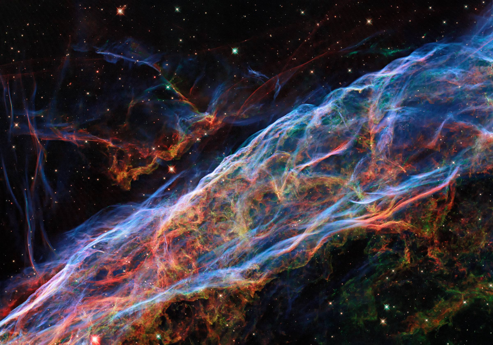

We are building a 40-kilometer gun that launches cargo to orbit.
Everything planned for orbit, from depots to stations to in-space industry, needs far more mass launched than rockets will supply. A rocket burns an entire vehicle to deliver a small payload fraction.
Our launcher stays on the ground. It fires a projectile up its barrel and is ready to fire again the same day. The cost of a shot is gas, electricity, and a simple vehicle.
Technology
A 40 km evacuated barrel built from sectioned steel tube, driven by compressed hydrogen. The full length is used for acceleration, so the ride stays gentle: under 80 g, within reach of properly mounted conventional satellite hardware, not just hardened cargo. A small onboard stage circularizes the orbit after exit.
Barrel length
40 km, evacuated, sectioned steel tube
Working gas
Hydrogen
Exit velocity
~8 km/s
Peak acceleration
<80 g
Cadence
Multiple shots per day per launcher
Cost target
Under $500/kg to LEO
Suppliers
We are sourcing large-bore steel tube sections, high-pressure vessels and valves, vacuum pumps and gate systems, and hydrogen infrastructure. Inquiries welcome.

Veil Nebula, ESA/Hubble & NASA, Z. Levay (CC BY 4.0)